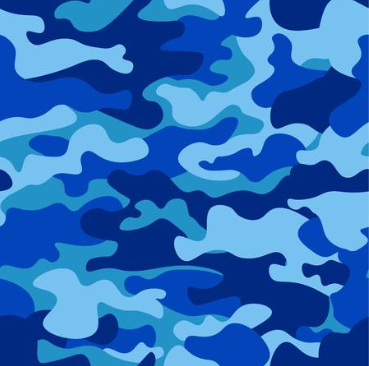
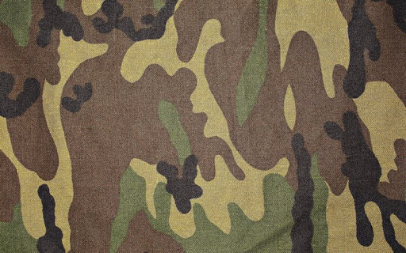
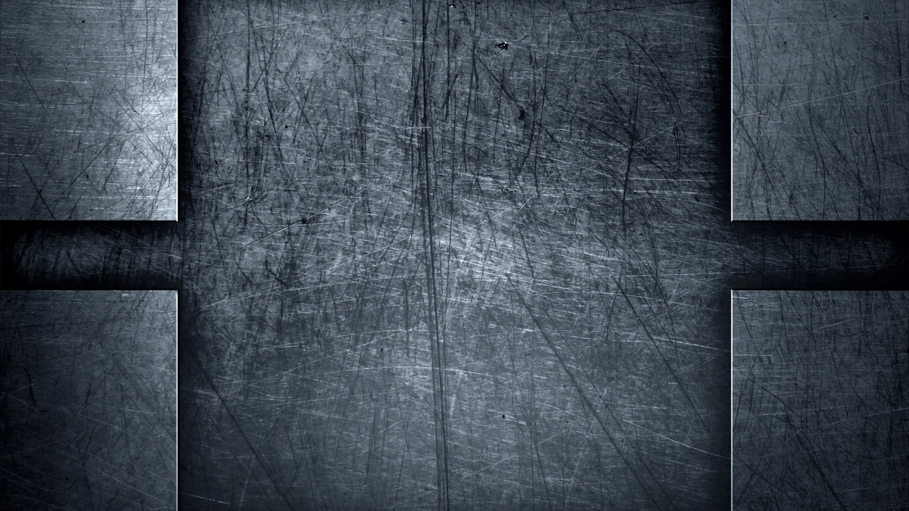

  
Rotation buttons
start/stop
rotation
Change
direction
Rotate X
Rotate Y
Rotate Z
Projection buttons
ON/OFF projection
Increase Radius
Decrease Radius
Increase Near
Decrease Near
Increase Far
Decrease Far
Increase theta
Decrease theta
Increase phi
Decrease phi
Texture buttons
ON/OFF texture
Change texture
spotlight controller
Turn on/off
positional light
increase
size
decrease
size
Increase x spotlight
Decrease x spotlight
Increase y spotlight
Decrease y spotlight
Increase z spotlight
Decrease z spotlight
spotlight color:
directional light color:
ambiental light:
ON/OFF
Cartoon shader
Add/Remove
effect